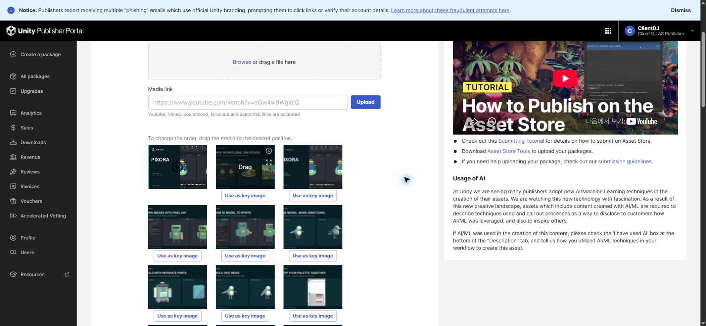
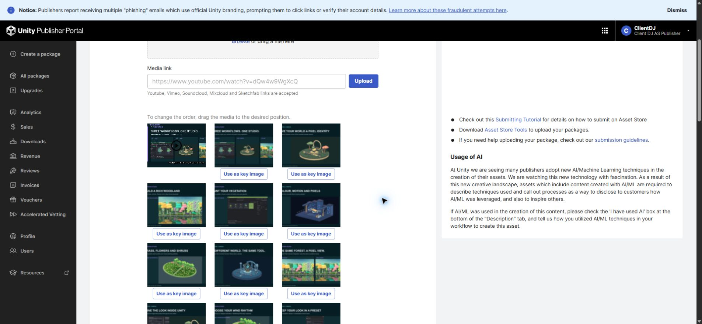
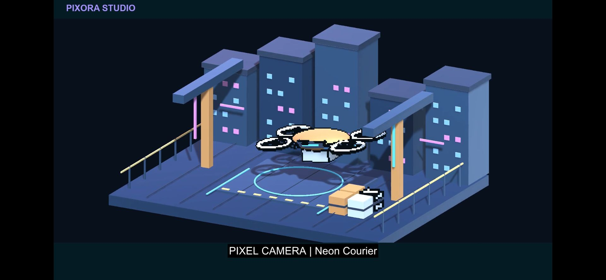
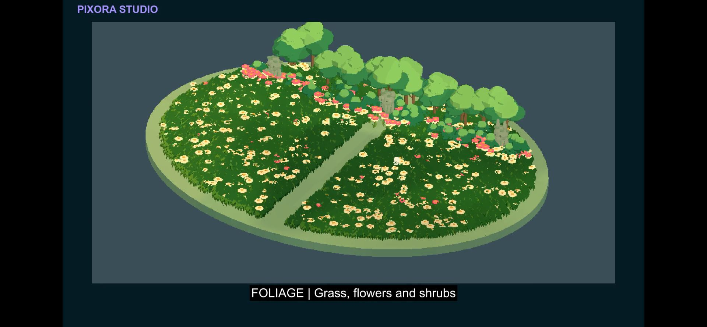
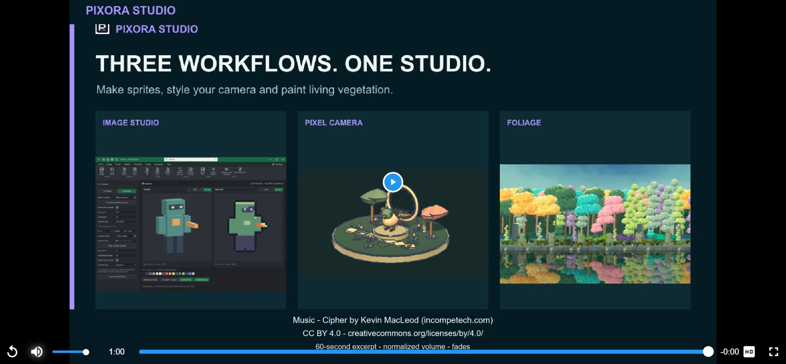

Tracefolio REPORTS & ISSUES
Tracefolio REPORTS & ISSUESPixora Studio 판매 갤러리 정리와 통합 영상 교체
완료구형·중복6장을 제거하고 Camera·Foliage를 앞으로 배치했습니다. 세 모듈의 60초 통합 영상을 저장·재생 검증했습니다.
작업 결과
판매 초안은 이미지21장·통합 영상1개입니다. 통합 소개와 Camera·Foliage11장을 앞에 배치하고 Image Studio의 유효한 상세10장은 유지했습니다. 최종 제출은 하지 않았습니다.
변경 내용
적용 내용
삭제한6장은 실제 내용을 대조했고 로컬 원본을 보존했습니다.
- 01-Cover.png: 구형 단일 Pixora 표지, 새 통합 소개로 대체
- 07-Palette.png: 옛 기본 Inspector, 현재 커스텀 Profile 이미지와 중복
- 09-Tone.png: 두 결과 차이가 드러나지 않는 비교
- 14-Editable.png: 옛 Inspector, 현행 작업 문서 화면 13번과 중복
- 15-Workspace.png: 별도 DDT 워크북 창이 섞인 구형 창 목록
- 16-Examples.png: 기존 배치 프로필 예제, 현재 12번 배치 기능과 중복
정렬: 영상 → 통합 소개 → Clockwork Garden → Woodland → 식생 팔레트 → Neon Courier → 꽃·관목 → Observatory → 식생 Camera 비교 → Camera 편집기 → 바람 리듬 → Camera 프리셋 → Image Studio 상세 기능.


최종 통합 영상 · 1080p / 24fps / 60초 Image Studio의 이미지 변환·애니메이션 3D 모델→2D 픽셀 스프라이트, Camera의 현행3개 예제, 최신 Woodland·Camera 연동·Blossom Walk를 담았습니다.
검증
Unity 6000.0.83f1 Linear에서 최신 식생3씬을 각72프레임(12fps)으로 실제 렌더링했습니다. 셰이더 오류0,216프레임 및 프레임 변화 확인. 12fps는 촬영·표현 주기이며 성능 개선 수치가 아닙니다. 기존 Image Studio·Camera 실제 녹화는 보존하여 재사용했습니다.
최종 파일12,618,525바이트, SHA-256 63a89821541c9aaa12d8ae82b30962806e5f50a632c772c979ba87867d7eb046. H.264 1920×1080/24fps, AAC48kHz stereo. 전체1440프레임·60.00초 디코드 통과. 음량 -19.73 LUFS, True Peak -4.14dBTP, -45dB 기준1초 이상 무음 없음.
공식 포털의 최종 플레이어를 음소거 해제해 끝까지 재생했고 오류 없이 종료됨을 확인했습니다. 사용자가 “소리 잘 나오네 방금 들어봄”으로 실제 청취를 확인했습니다. 에이전트 오디오 입력 도구는 지원되지 않아 직접 들었다고 주장하지 않습니다.
  
초안 저장·전체 새로고침 후21장·영상1개 및 순서를 대조했습니다. 기존 영상과 초기 자막 편집본은 로컬에 보존한 뒤 포털에서 제거했습니다. 네이티브 그림 원본은 기존 검증된 Affinity 갤러리 원본을 재사용했고, 영상 원본 프레임·Edit.json·필터·SRT·크레딧·해시는 프로젝트 안에 보관했습니다. 작업용 Unity는 종료됐고 씬 dirty=false, 검증용 브라우저 탭2개도 닫았습니다. 사용자 기존 판매 탭과 앱은 보존했습니다.
음원: Cipher — Kevin MacLeod, 공식 출처, CC BY 4.0. 60초 발췌·음량 조정·페이드를 적용했고 영상 끝·메타데이터·별도 크레딧에 표시했습니다. 홍보용이며 고객 Unity 패키지에는 포함하지 않습니다.
교훈 검토: 삭제 도중 Camera 한 장 누락을 ID 대조로 발견하여 원본 재업로드·재대조로 복구했습니다. 원인은 미확인입니다. 이후 각 삭제 대상의 사라짐을 확인한 뒤 다음 작업을 진행했습니다. 기존 실제 대조·검증 지침으로 포괄되어 전역 지침 변경 없음.
남은 사항
Asset Store 최종 제출·공개 판매본 반영은 미실행이며 현재는 저장된 판매 초안입니다. 키 이미지는 이번 요청에서 변경하지 않았습니다.
작업 시간
- 제안 시간: 이미지 5–10분, 영상·검증 20–30분
- 실제로 완료된 시간: 2026-11-04 18:25:36 KST 시작, 18:53 KST경 미디어·포털 검증 완료(약27분). 보고서 공개 확인은 최종 채팅에 기록.
- XERJ: 실패 — Status는 node not running, Search 재시도는 node.lock 점유로 실패. rg와 현재 소스로 격리 프로젝트 템플릿 참조를 확인.